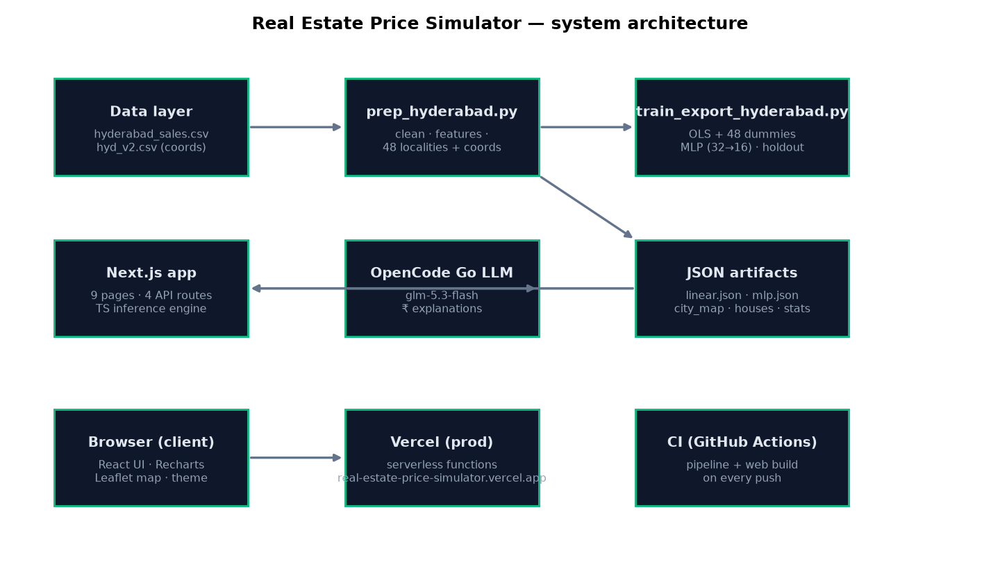

The system is a three-stage pipeline: an offline Python analysis layer produces trained models and JSON artifacts, a Next.js application layer re-implements those models in TypeScript for instant inference, and a serverless deployment (Vercel) serves it with an optional LLM for natural-language explanations.

| File | Rows | Purpose |
|---|---|---|
data/hyderabad_sales.csv | 2,518 | Primary dataset: price, area, bedrooms, resale, 30 amenity columns, locality |
data/hyd_v2.csv | 19,110 | Rental listings carrying locality coordinates; used once to derive (lat, long) centroids per locality |
data/hyderabad_clean.csv | 2,518 | Output of prep: 11 numeric features + display locality + coordinates |
scripts/prep_hyderabad.py)value ≥ 1 → 1).area, bedrooms, resale, pool, gym, clubhouse, security, backup, car_parking, lift, vaastu.Other (49 groups, drop-first coding ⇒ 48 dummies).scripts/train_export_hyderabad.py)Data is split 80/20 (deterministic, random_state=42); all metrics below are reported on the 20% holdout. The target is modelled in INR millions (price_scale = 1e6) for numerical stability; the app multiplies back to rupees at display time.
| Model | Method | Holdout R² | RMSE |
|---|---|---|---|
| Area only | OLS, 1 feature | 0.693 | ₹43.99 L |
| Multiple (11 features) | OLS | 0.709 | ₹42.86 L |
| Multiple + locality | OLS + 48 dummy columns | 0.775 | ₹37.68 L |
| Neural net | MLP 32→16, ReLU, Adam, early stopping | 0.714 | ₹42.46 L |
The full model is fitted by Ordinary Least Squares on the design matrix X = [1, features, dummies]:
β = (XᵀX)⁻¹ XᵀyLocality coefficients are interpretable premia: Banjara Hills +₹89.9 L, Jubilee Hills +₹84.1 L, Madhapur +₹41.7 L … Attapur −₹24.1 L, Tellapur −₹21.8 L — relative to the reference locality, controlling for all features.
| Artifact | Contents | Consumed by |
|---|---|---|
linear.json | names/coefs/means/stds/intercept, price_scale, zip_prefix="loc_", lin10 stats (R², adj R², F, p-values, nobs), holdout R²/RMSE | predict, breakdown, regression page, coef table, k-NN normalisation |
mlp.json | sklearn weights coefs (n_in × n_out) & intercepts, feature means/stds, holdout stats | predict (neural net card), assistant |
city_map.json | 49 localities: display name, model key, median price, n, lat/long | selects, parser, map chips, similar route |
houses.json | 2,518 full records (id, price, 11 features, locality, lat/long) | map dots, k-NN similar (bundled import) |
stats.json / residuals.json | histograms, locality medians, scatter, correlation matrix, model comparison, residual/QQ samples | explore/correlation/regression pages, /api/stats |
figures/*.png | heatmap, residuals, scatter | report page |
| Route | Method | What it does |
|---|---|---|
/api/predict | POST | Features in → regression + MLP prices, ±1 RMSE band, per-feature ₹ breakdown |
/api/similar | POST | k-NN: 10 closest real listings over standardised features |
/api/assistant | POST | Text → parser → model → LLM narrative (falls back to template engine) |
/api/stats | GET | Aggregated stats, correlation matrix, coefficient table, model comparison |
web/lib/predict.ts)The TypeScript engine reproduces the Python algebra exactly:
predictLinear — mean-centred decomposition: prediction = (intercept + Σ coef·mean over all columns) + Σ coef·(x − mean) + locality dummy sum. The mean-centring constant is rebuilt from the exported arrays so the two sides cannot drift apart.predictMlp — exact MLP forward pass: feature standardisation, 32→16 ReLU hidden layers, identity output; sklearn matrices are stored (n_in × n_out) and transposed on the fly.nearestHouses — in-memory k-NN over the standardised 11 features against all 2,518 bundled records (O(n) per query, ~2 ms).Sample response of /api/predict (1,500 sq ft, 3 BHK, amenities, Banjara Hills):
{
"linear": { "price": 16531920, "rmse": 3767898, "r2": 0.7748,
"band": [12764022, 20299818] },
"mlp": { "price": 8244595, "rmse": 4246259, "r2": 0.7140,
"band": [3998335, 12490854] },
"breakdown": [ { "key": "location", "label": "Locality", "amount": ... }, ... ]
}city_map keys.predictLinear/predictMlp.https://opencode.ai/zen/go/v1/chat/completions, model glm-5.3-flash) with a system prompt that hands the model the computed numbers; the response is the final narrative.User-Agent (Cloudflare 403 otherwise) and a stable x-opencode-session header; the key lives only in server env vars (never git); the chosen model returns direct content (reasoning models can exhaust the token budget on inner monologue).All-in cost = price × (1 + (stamp_duty% + registration%)/100), with rates (4% + 1%) configurable in web/lib/config.ts and labelled as approximate Telangana rates.
prutxvis-projects/real-estate-price-simulator, alias https://real-estate-price-simulator.vercel.app, deployment protection off.public/). This constraint drove the k-NN rewrite to an in-memory import.# deploy
cd web
vercel --prod --yes
# local
npm run build && PORT=3100 npm start.github/workflows/ci.yml)npm ci && npm run build in web/.| Bug | Symptom | Fix |
|---|---|---|
| Raw intercept + mean-centred terms double-counted the mean shift | Every price inflated by ~₹10 L | Rebuild the mean-centring constant from exported arrays |
pd.get_dummies(prefix="loc_") adds its own separator | Dummy columns became loc__x; TS lookup loc_x never matched | Train with prefix="loc" so names align |
| MLP layers iterated as (out × in) instead of sklearn’s (in × out) | NaN prices | Transpose in the forward pass |
| Map filter defaulted to the dataset minimum (₹20 L) | Map looked empty | Default to ₹2.5 Cr (~94% of listings) |
fs.readFileSync(public/…) in a lambda | Would 500 on Vercel | Bundle houses.json via import; in-memory k-NN |
real-estate-price-simulator/
├── data/ # raw + cleaned datasets
├── scripts/ # prep → train → figures pipeline + requirements.txt
├── web/ # Next.js app (app/, lib/, components/, public/data)
├── docs/ # this document, PDFs and figures
├── screenshots/ # UI captures for the README
├── .github/workflows/ci.yml # pipeline + build CI
└── LICENSE · README.md · CONTRIBUTING.md · CHANGELOG.md